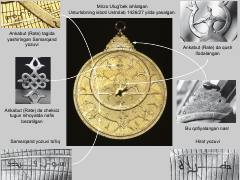

MUMirzo Ulug'bekning tarixiy usturlobi va uning tuzilishi haqidagi ilmiy-tarixiy ma'lumotlar.
Ushbu asar Mirzo Ulug'bek tomonidan 1426-1427 yillarda yasalgan tarixiy usturlobning tuzilishi va uning o'ziga xos bezaklari haqida hikoya qiladi. Kitobda asbobning tarkibiy qismlari, xususan, Ankabut qismi va undagi Samarqand hamda Hirot yozuvlarining ahamiyati yoritilgan.